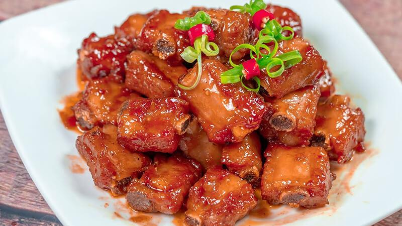

CHƯƠNG 4: MÓN CUỐI TUẦN
1. CÁ ĐIÊU HỒNG HẤP TÀU XÌ
Tàu xì được làm từ đậu đen rang lên, rồi cho lên men. Tàu xì khác có độ sánh đậm đặc hơn nước tương. “Cá điêu hồng hấp tàu xì” là một món ăn lạ miệng mà bạn không thể bỏ qua trong những ngày cuối tuần.
Chuẩn bị: 15 phút
Thực hiện: 15 phút
Khẩu phần: 4 người
Nguyên Liệu
• 150g tôm sú
• 5 quả trứng gà
• 1 trứng vịt bắc thảo
• 30g nấm bào ngư
• 1/2 trái ớt sừng, 1 nhánh hành lá, 1 nhánh ngò rí, 1 thìa cà phê
• Hạt nêm Knorr, 1 thìa cà phê muối, 1/4 thìa cà phê tiêu xay, 1/4 thìa súp bột bắp; nước tương pha tương ớt, dưa leo, cà chua, xà lách ăn kèm
Cách nấu
• Tôm sú rửa sạch, lột vỏ, bỏ chỉ lưng, luộc sơ trong nước có cho ít muối cho tôm vừa chín tới.
• Trứng gà đánh tan với 1/2 thìa cà phê Hạt nêm Knorr, tiêu xay và bột bắp pha với ít nước để tạo độ kết dính. Trứng vịt bắc thảo bóc vỏ, cắt nhỏ.
• Nấm bào ngư rửa sạch, xé nhỏ. Ớt sừng bỏ hạt, cắt sợi. Hành lá, ngò rí cắt nhỏ.
• Đặt tôm sú, nấm bào ngư và trứng bắc thảo vào chén, cho hỗn hợp trứng gà vào, mang hấp khoảng 15 phút. Khi thấy mặt trứng se lại, dùng tăm xăm vào, nếu không thấy sủi nước là trứng chín.
• Lấy trứng ra, trang trí thêm ớt, hành lá, ngò rí, dùng với cơm trắng, ăn kèm dưa leo, xà lách, cà chua, chấm nước tương pha tương ớt rất ngon.
2. LẨU BẮP BÒ NHÚNG HÀNH RĂM
Bắp bò làm được rất nhiều món ngon. Nếu hôm nào lười cơm, muốn tìm đến các món nước thì lẩu bắp bò nhúng hành răm ăn với bún tươi chính là một gợi ý thú vị.
Chuẩn bị: 20 phút
Thực hiện: 10 phút
Khẩu phần: 4 người
Nguyên Liệu
• 1/2 kg bắp bò hoa hoặc bắp chuột
• 5 quả sấu hay me dầm
• 3 quả cà chua
• 1 thìa súp gừng cắt sợi
• 2 quả ớt sừng
• 1/2 kg hành lá rửa sạch, cắt khúc
• 100g rau răm
• 100ml nước cốt thơm
• 2 thìa súp hành tây băm
• 1/2 thìa súp tỏi băm, 2 lít nước dùng, 1 thìa súp Nước mắm chấm Knorr, 1 thìa cà phê muối, 1 thìa cà phê đường, 1/2 thìa súp Hạt nêm Knorr, 1/4 thìa cà phê tiêu, 1 thìa cà phê mắm tôm, dầu ăn, 1/2 kg bún tươi
Cách nấu
• Bắp bò rửa sạch, cắt miếng dày khoảng 1cm, trụng sơ qua nước sôi, rửa lại cho sạch, ướp với nước thơm, 1/2 lượng tỏi và hành tây băm, muối, mắm tôm, Hạt nêm Knorr.
• Để khoảng 10-15 phút cho thấm gia vị.
• Cà chua rửa sạch, cắt múi cau. Hành lá rửa sạch, cắt khúc. Rau răm nhặt bỏ cọng già, rửa sạch.
• Làm nóng 1 thìa súp dầu ăn, cho cà chua vào xào qua, rồi múc ra để riêng ra một cái chén.
• Phi thơm phần hành tây và tỏi băm còn lại với dầu ăn, cho thịt bò vào xào cho săn lại, chế nước dùng vào, hầm trong khoảng 30 phút cho thịt mềm. Tiếp theo, cho sấu (hoặc nước me) vào, nêm đường, nước mắm chấm Knorr, Hạt nêm Knorr cho vừa ăn, sau cùng cho cà chua và gừng cắt sợi vào.
• Múc ra bát hoặc cho vào lẩu, dọn ra bàn ăn nóng cùng với bún, hành lá và rau răm.
3. LƯỠI HEO NẤU PATÊ
Từ các nguyên liệu dễ kiếm, bạn có thể nấu cho gia đình món ăn nóng với cơm trắng và bánh mì đều rất ngon. Món ăn có thịt mềm, thơm hợp với cơm, xôi, bánh mì.
Chuẩn bị: 15 phút
Thực hiện: 30 phút
Khẩu phần: 4 người
Nguyên Liệu
• 1 cái lưỡi heo
• 100g patê gan
• 3 củ khoai tây bi
• 1 củ cà rốt
• 2 quả cà chua
• 1 quả dừa xiêm
• Gia vị: hành và tỏi băm, gừng, Hạt nêm Knorr, tiêu, dầu điều, ít ngò rí để trang trí; muối tiêu chanh và bánh mì ăn kèm
Cách nấu
• Lưỡi heo rửa qua bằng nước muối. Nhúng lưỡi vào nước sôi khoảng 2-3 phút. Dùng dao cạo sạch lớp màng trắng quanh lưỡi và cuống lưỡi. Bóp muối, dấm và rửa lại bằng nước sạch nhiều lần.
• Thái lưỡi thành những lát dày khoảng 1 cm. Ướp với hành tỏi băm, Hạt nêm Knorr, mì chính.
• Khoai tây gọt vỏ cắt miếng ngâm vào nước cho bớt nhựa, vớt ra để ráo, cà rốt gọt vỏ xắt miếng, cà chua rửa sạch bóc vỏ xay nhuyễn, hành tỏi băm nhuyễn.
• Bắc nồi lên bếp đổ dầu và đợi nóng già, cho lưỡi vào xào săn.
• Cho chảo lên bếp thêm chút dầu ăn, cho cà rốt, khoai tây vào đảo đều, nêm chút gia vị. Cho một nửa patê vào xào cùng đến khi khoai ngấm là được.
• Phi thơm hành tỏi, cho cà chua vào xào, nêm chút gia vị, đổ 1 bát nước dừa, cho cà chua, cà rốt vào hầm cùng, sôi thì cho lưỡi và nốt phần patê còn lại, nêm nếm. Đun đến khi khoai mềm, thịt mềm là được. Nước sốt phải sanh sánh, màu óng vàng đẹp mắt, thịt mềm và thơm.
4. MỰC ỐNG DỒN THỊT HẤP SỐT ME
Cũng là mực ống, cũng là hấp, nhưng món ngon hôm nay sẽ là một biến tấu mới có phần hấp dẫn hơn mang tên “Mực ống dồn thịt hấp sốt me”.
Chuẩn bị: 15 phút
Thực hiện: 20 phút
Khẩu phần: 4 người
Nguyên Liệu
• 500g mực ống (loại khoảng 6 con/kg)
• 350g nạc dăm xay
• 1 thìa cà phê hành tím băm
• 1/2 thìa cà phê ớt băm, 1 thìa cà phê Hạt nêm Knorr, 1/4 thìa cà phê tiêu xay
• Sốt me: Cho 1 thìa súp dầu ăn vào chảo, phi thơm 1 thìa cà phê tỏi băm, cho 150ml nước cốt me vào nồi đun sôi, nêm 1/2 thìa súp Nước mắm chấm Knorr và 1/2 thìa cà phê Hạt nêm Knorr cho vừa ăn
Cách nấu
• Mực ống làm sạch, bỏ râu, ngâm trong nước rượu pha loãng khoảng 10 phút để khử bớt mùi tanh, rửa lại với nước sạch, để ráo nước
• Trộn đều thịt xay, hành tím băm, ớt băm, Hạt nêm Knorr trong bát lớn, để ít nhất 10 phút cho thịt thấm gia vị
• Cho thịt vào dồn từ từ vào mực cho chắc nhân, đem hấp cách thủy khoảng 20 phút là vừa chín, lấy ra, cắt lát vừa ăn
• Xếp vào đĩa, rưới xốt me pha sẵn vào, trang trí cần tây cho đẹp, dùng nóng với cơm.
5. THĂN HEO NƯỚNG TRÀ XANH
Thăn heo rất mềm, ngon, trà xanh lại bỗ dưỡng. Thăn heo nướng với lá trà xanh khá lạ; tuy nhiên, sự kết hợp vị hơi chát của lá trà cùng vị ngọt của thịt sẽ hứa hẹn một món ăn vô cùng ngon miệng!
Chuẩn bị: 10 phút
Thực hiện: 15 phút
Khẩu phần: 4 người
Nguyên Liệu
• 300g thăn heo, cắt miếng vừa ăn
• 1/2 chén lá trà xanh
• 2 tép tỏi, bằm nhuyễn
• 2 củ hành tím, bằm nhuyễn
• 200g xà lách, cà chua, dưa leo
• 1 muỗng cà phê Hạt nêm Knorr
• 1/2 muỗng cà phê đường cát trắng
• 1/2 muỗng canh nước tương
• 1/4 muỗng cà phê tiêu xay
• 1 muỗng canh dầu ăn
Cách nấu
• Ướp thăn heo với Hạt nêm Knorr, nước tương, đường cát trắng, tiêu xay, hành tím và tỏi bằm. Để cho thấm.
• Nhúng sơ trà xanh qua nước sôi.
• Dùng lá trà xanh cuộn xung quanh thăn heo và giữ chặt bằng que xiên.
• Nướng chín thăn heo trên lửa than.
• Để thăn heo vào đĩa, trang trí với xà lách, cà chua, dưa leo.
• Dùng nóng với muối ớt.
6. SÚP BÓ XÔI THỊT CUA
Hương thơm của kem tươi, bơ cùng các gia vị hòa quyện với vị dịu ngọt của nước dùng, thanh mát của bó xôi, béo thơm của khoai tây, thịt cua tạo nên sức hấp dẫn của món “Súp bó xôi thịt cua”.
Chuẩn bị: 20 phút
Thực hiện: 25 phút
Khẩu phần: 4 người
Nguyên Liệu
• 100g thịt cua
• 200g cải bó xôi
• 1/4 củ hành tây
• 1/4 cây tỏi tây (hành boa-rô)
• 1 củ khoai tây nhỏ
• 3,5 chén nước dùng, 1 nhánh ngò tây, 2 lá thơm, 1/2 thìa cà phê muối, 1 thìa cà phê Hạt nêm Knorr từ Nấm và Rong Biển, 1⁄4 thìa cà tiêu xay, 3 thìa súp kem tươi (whipping cream)
• 1,5 thìa súp bơ, 1 thìa súp rượu vang trắng, dầu ăn
Cách nấu
• Thịt cua luộc sơ với rượu trắng.
• Cải bó xôi cắt nhỏ. Hành tây, tỏi tây, khoai tây cắt miếng mỏng.
• Làm nóng dầu, xào thơm hành tây và tỏi tây, cho 1 ít nước lọc vào, cho cải bó xôi, khoai tây, lá thơm vào đun sôi, vặn lửa nhỏ, nấu khoảng 25 phút cho tất cả nguyên liệu mềm.
• Cho hỗn hợp súp vào máy xay, xay nhuyễn, bắc trở lên bếp nấu sôi, nêm muối, Hạt nêm Knorr từ Nấm và Rong biển, tiêu xay vừa ăn. Tắt lửa, cho kem tươi và bơ vào khuấy đều.
• Múc súp ra đĩa, cho thịt cua lên, trang trí với ngò tây, dùng nóng.
7. TÔM XÀO BÔNG THIÊN LÝ SỐT DẦU HÀO
Bông thiên lý ngon ngọt và giòn giòn có thể chế biến nhiều món ăn, làm cho tinh thần trở nên thư giãn, khoan khoái vô cùng. Ngày mùa nóng mà được ăn một dĩa bông thiên lý xào tôm thì còn gì tuyệt vời bằng.
Chuẩn bị: 10 phút
Thực hiện: 15 phút
Khẩu phần: 4 người

Nguyên Liệu
• 300g tôm
• 150g bông thiên lý
• 150g ớt chuông vàng, đỏ
• 1/2 củ hành tây
• 50g cà rốt
• 1 ít lá quế, 1 thìa cà phê tỏi băm
• 2 thìa cà phê Hạt nêm Knorr từ Nấm và Rong Biển, 1 thìa cà phê Nước mắm chấm Knorr
• 1 thìa súp nước tương
• 1 thìa cà phê dầu hào
• 1/2 thìa cà phê tiêu, 2 thìa súp dầu ăn
Cách nấu
• Tôm rửa sạch, bóc vỏ, chẻ sống lưng, lấy chỉ đen. Ướp tôm với Hạt nêm Knorr từ Nấm và Rong Biển, tiêu, để thấm gia vị 15 phút.
• Bông thiên lý ngắt bỏ phần gốc già, rửa sạch, để ráo. Ớt chuông xắt lát xéo. Cà rốt bào vỏ, xắt thỏi, trụng sơ. Hành tây bỏ vỏ lụa, xắt múi. Lá quế rửa sạch.
• Quậy đều Nước mắm chấm Knorr với nước tương, dầu hào.
• Làm nóng dầu ăn, phi thơm tỏi băm, trút tôm vào đảo nhanh tay, cho cà rốt, ớt chuông vào xào, sau đó cho hành tây, bông thiên lý, lá quế vào đảo đều, trút hỗn hợp dầu hào vào, xóc đều, tắt bếp.
• Cho tôm xào bông thiên lý, xốt dầu hào ra đĩa sâu lòng, dung nóng.
8. SƯỜN NON KHO NƯỚC DỪA
Vị thơm ngậy của nước dừa kết hợp với những miếng sườn non sẽ tạo ra một đĩa sườn kho nước dừa đậm đà, ngọt mềm cho bữa cơm của gia đình bạn. Hãy cùng làm món ăn hấp dẫn này nhé!
Chuẩn bị: 10 phút
Thực hiện: 25 phút
Khẩu phần: 4 người
Nguyên Liệu
• 400g sườn non
• 200g cái dừa tươi
• 10g tỏi băm
• Gia vị: 1 thìa cà phê đường, 2 thìa cà phê Nước mắm chấm Knorr, 2 thìa cà phê Hạt nêm Knorr từ Thịt Thăn, Xương Ống và Tủy, dầu ăn
Cách nấu
• Sườn non rửa sạch, chặt miếng vừa ăn.
• Cái dừa tươi xắt miếng vừa ăn.
• Làm nóng dầu ăn, cho tỏi vào phi thơm, cho sườn non và cái dừa tươi vào xào săn lại, nêm Nước mắm chấm Knorr, Hạt nêm Knorr từ Thịt Thăn, Xương Ống và Tủy vừa ăn. Cho nước vào xăm xắp mặt thịt, kho đến khi nước sánh lại là được.
• Múc ra đĩa, dùng với cơm.
9. HỦ TIẾU ĐEN SINGAPORE
Món ăn có nhiều hương vị này vừa dễ làm vừa nhanh chóng, và đồng thời đảm bảo mang đến cho bạn một món ăn tối đậm chất Á Đông. Hãy thưởng thức món “Hủ tíu xào Singapore” này nhé.
Chuẩn bị: 20 phút
Thực hiện: 10 phút
Khẩu phần: 2 người
Nguyên Liệu
• 1/2 kg hủ tiếu tươi (cọng lớn)
• 10g giá sống, rửa sạch, để ráo
• 50g cải thìa, rửa sạch, để ráo
• 20g nấm đông cô tươi, cắt bỏ chân nấm, rửa sạch, để ráo
• 20g cà rốt tỉa hoa
• 50g cải rổ
• Hành lá, rửa sạch, để ráo
• 100g tôm tươi, bóc vỏ, chừa đuôi, chẻ lưng lấy chỉ đen
• 100g mực tươi, khứa vẩy rồng, cắt miếng vừa ăn
• 20g thịt heo băm
• Gia vị: 1⁄2 muỗng nước tương đậm đen
• 2 muỗng dầu hào
• 1/2 muỗng nước tương ngon
• 1 muỗng Hạt nêm Knorr từ Thịt Thăn, Xương Ống và Tủy
• 1 muỗng bột gà
• 1/2 muỗng đường
• 1/4 muỗng tiêu xay
• 1 muỗng rượu Shaoxing
• 1 muỗng bột năng pha loãng
• 1/4 muỗng dầu mè
• 1/2 muỗng sốt gà
• 1 muỗng tỏi băm và gừng băm
• Dầu nóng, hủ tiếu và giá vào chảo, rưới nước tương đậm lên hủ tiếu, xào trên lửa lớn cho hủ tiếu cháy giòn. Cho hủ tiếu ra đĩa.
Cách nấu
• Dầu nóng, hủ tiếu và giá vào chảo, rưới nước tương đậm lên hủ tiếu, xào trên lửa lớn cho hủ tiếu cháy giòn. Cho hủ tiếu ra đĩa.
• Xào tỏi và gừng cho thơm, cho tôm, mực thịt băm vào xào. Nêm dầu hào, nước tương, tiêu, đường, bột gà, rượu, cải thìa, cà rốt, nấm, nước dùng và không thể thiếu Hạt nêm Knorr từ Thịt thăn, Xương ống và Tủy giúp cho món ăn ngon ngọt đậm đà và dậy mùi thơm.
• Cho đồ xào lên hủ tiếu. Trang trí hành ngò, và rắc thêm một ít tiêu. Dùng nóng. Dọn kèm với xì dầu và ớt sừng xắt lát.
10. BA RỌI KHO NẤM ĐÔNG CÔ
Thêm một ít gia vị và nguyên liệu vào các món tuyền thống, bạn đã mang đến sự mới lạ, hấp dẫn cho mâm cỗ ngày xuân với món ăn “Ba rọi kho nấm đông cô”.
Chuẩn bị: 15 phút
Thực hiện: 25 phút
Khẩu phần: 4-6 người
Nguyên Liệu
• 400g thịt ba rọi
• 150g nấm đông cô khô
• 100g chả cua
• 1 thìa cà phê hành tím băm
• 2 thìa cà phê Hạt nêm Knorr từ Nấm và Rong Biển
• 1 thìa súp Nước mắm chấm Knorr
• 1 thìa súp dầu ăn
Cách nấu
• Thịt ba rọi rửa sạch, cắt khối vừa ăn, ướp với Hạt nêm Knorr từ Nấm và Rong Biển, Nước mắm chấm Knorr, để khoảng 15 phút cho thấm gia vị. Chả cua cắt lát vừa ăn.
• Nấm đông cô rửa sạch, ngâm mềm (lấy nước để kho thịt cho thơm mùi nấm).
• Làm nóng dầu, phi thơm hành băm, cho thịt ba rọi vào xào săn, cho chả cua, nấm và nước ngâm nấm vào (nếu chưa ngập mặt thịt thì thêm nước sạch vào), kho lửa nhỏ cho nấm và thịt mềm vừa ăn, lượng nước còn khoảng 1/3 là được.
• Múc thịt ra đĩa, dùng nóng với cơm.
11. CÁ RÔ KHO DƯA HƯỜNG
Cá rô là loại thực phẩm tươi ngon, bổ, rẻ mà lại dễ chế biến. Món “Cá rô kho dưa hường” là một ý tưởng mới làm cho món kho hằng ngày trở nên lạ miệng.
Chuẩn bị: 30 phút
Thực hiện: 25 phút
Khẩu phần: 4 người
Nguyên Liệu
• 4 con cá rô, làm sạch
• 2 trái dưa hường, gọt vỏ, cắt múi cau
• 3 tép tỏi, đập dập
• 2 nhánh hành lá, đập dập
• 3 trái ớt hiểm, đập dập
• 1 trái dừa xiêm, lấy nước
• 3 muỗng cà phê Hạt nêm Knorr từ Nấm và Rong Biển
• 1 muỗng canh Nước mắm chấm Knorr
• 1 muỗng cà phê đường cát trắng
• 3 muỗng cà phê nước màu
• 1⁄4 muỗng cà phê tiêu xay
• 2 muỗng canh dầu ăn
Cách nấu
• Ướp cá 15 phút với Hạt nêm Knorr từ Nấm và Rong Biển, Nước mắm chấm Knorr, gia vị và hành, tỏi, ớt.
• Đun nóng dầu ăn cho cá rô vào nồi xào sơ. Thêm nước dừa vào nồi, đun sôi lên và kho khoảng 15 phút.
• Cho tiếp dưa hường vào nồi, kho thêm 10 phút nữa cho tất cả nguyên liệu chín đều và thấm gia vị là được.
• Múc cá kho dưa hường vào tô, rắc tiêu xay và dùng nóng với cơm.
12. MỰC KHÌA TRÁI DỪA
Đi du lịch, dã ngoại có nấu nướng là cơ hội tốt để thể hiện tài bếp núc của bạn. Xin giới thiệu món “Mực khía quả dừa” dành cho bữa tiệc ngoài trời vui vẻ.
Chuẩn bị: 25 phút
Thực hiện: 20 phút
Khẩu phần: 4 người
Nguyên Liệu
• 400g mực lá
• 1/2 củ hành tây
• 4 quả dừa xiêm nhỏ
• 1/2 thìa súp gừng cắt sợi
• 1 thìa súp ớt sừng cắt sợi
• 2 nhánh hành lá
• 1,5 thìa cà phê Hạt nêm Knorr từ Thịt Thăn, Xương Ống và Tủy
• 1/2 thìa cà phê tiêu sọ đập dập
• 1 thìa cà phê ngũ vị hương
• 2 thìa súp dầu ăn
Cách nấu
• Mực lá lột da, rửa sạch, khứa ngang lưng, cắt miếng vừa ăn, ướp với tỏi bằm, Hạt nêm Knorr, tiêu sọ và ngũ vị hương, để 10 phút cho thấm gia vị.
• Hành tây lột vỏ, cắt miếng mỏng.
• Dừa xiêm lấy phần nước, để riêng một bên.
• Đun nóng dầu ăn cho mực vào chiên vàng, chế nước dừa vào, khìa mực đến khi nước xốt sệt lại là được, cho hành tây, gừng, ớt và hành lá vào, đảo đều.
• Múc mực vào quả dừa, cho vào lò nướng vài phút cho nóng, để mực khìa quả dừa vào dĩa, dùng nóng.
13. CANH GÀ NẤU VỚI NẤM TUYẾT
Hãy cùng vào bếp để nấu món “Canh gà nấu với nấm tuyết” - một món ăn thanh nhiệt cho những ngày nắng nóng đang về.
Chuẩn bị: 30 phút
Thực hiện: 15 phút
Khẩu phần: 2 người
Nguyên Liệu
• 2 cái đùi gà
• 1 cái nấm tuyết
• 150g hạt sen
• 5g tóc tiên
• 10g nấm đông cô tươi
• 50g hành lá
• 0,6 lít nước dùng
• 2 thìa cà phê Hạt nêm Knorr từ Nấm và Rong Biển
Cách nấu
• Đùi gà rửa sạch, chặt miếng vừa ăn.
• Nấm tuyết rửa qua nước cho sạch, ngâm nở, dùng kéo cắt bỏ phần cuống màu vàng và cứng, cắt miếng vừa ăn.
• Hạt sen ngâm nước khoảng 30 phút, cho vào nồi nấu mềm, vớt ra đậy kín để sen giữ độ mềm không bị khô.
• Tóc tiên ngâm nhanh trong nước.
• Nấm đông cô tươi dùng khăn ướt lau sạch.
• Nấu sôi nước dùng, cho gà vào nấu sôi lại. Sau đó, hạ nhỏ lửa nấu cho đến khi thịt gà chín, rồi vớt thịt gà ra ngâm qua nước đá lạnh.
• Cho nấm đông cô vào nước luộc gà, nấu cho sôi, nêm với Hạt nêm Knorr từ Nấm và Rong Biển cho vừa ăn. Tiếp theo cho hạt sen đã mềm, nấm tuyết, tóc tiên vào, nấu cho sôi lại, tắt bếp.
• Múc canh vào bát, rắc ít hành xắt nhuyễn vào, dùng nóng.
14. CƠM CHIÊN HOA THIÊN LÝ
Món “Cơm chiên hoa thiên lý” một món cơm rất hấp dẫn, thơm ngon, đủ dinh dưỡng và đẹp mắt, rất phù hợp cho các bữa tiệc tại nhà.
Chuẩn bị: 20 phút
Thực hiện: 30 phút
Khẩu phần: 8 người

Nguyên Liệu
• 300g gạo thơm, vo sạch
• 50g hoa thiên lý, rửa sạch, cắt bỏ phần chân
• 50g thịt cua
• 100g thịt còi điệp, rửa sạch
• 1 khúc cà rốt, gọt vỏ, cắt hạt lựu
• 3 tép tỏi, lột vỏ, bằm nhuyễn
• 2 nhánh hành lá, rửa sạch, cắt nhuyễn
• 1 nhánh ngò rí, rửa sạch, cắt khúc
• 2 cái trứng gà, khuấy đều
• 1 khúc gừng, gọt vỏ, đập dập
• 3 muỗng cà phê Hạt nêm Knorr từ Nấm & Rong Biển
• 1/4 muỗng cà phê tiêu xay
• 4 muỗng canh dầu ăn
• 1/2 muỗng canh rượu trắng
• Nước chấm: nước tương + ớt
Cách nấu
• Gạo thơm, nấu chín, xới đều.
• Luộc sơ thịt cua, thịt còi điệp với gừng và rượu để khử mùi tanh.
• Luộc sơ hoa thiên lý và cà rốt.
• Xào tỏi với dầu ăn cho thơm, thêm trứng gà vào chảo xào đều.
• Thêm cơm trắng vào chảo xào chín. Nêm với Hạt nêm Knorr từ Nấm & Rong Biển cho vừa ăn.
• Cho tiếp thịt cua, thịt còi điệp, hoa thiên lý, cà rốt hành lá vào chảo, đảo đều.
• Múc cơm vào dĩa, rắc tiêu xay và trang trí với ngò rí. Dùng nóng.
15. CƠM CHIÊN BÍ ĐỎ
“Cơm chiên bí đỏ” là một món chay thanh đạm vừa dễ làm, hấp dẫn, mà lại lung linh màu sắc.
Chuẩn bị: 20 phút
Thực hiện: 20 phút
Khẩu phần: 2 người

Nguyên Liệu
• 3 chén cơm trắng
• 100g thịt xông khói chay
• 100g bí đỏ
• 100g đậu Hà Lan
• 1 trái bắp luộc chín
• 1 thìa súp nho khô
• 1 cây hành boa-rô, 1 thìa súp bơ nước, 2 thìa súp dầu mè, 1 thìa cà phê bột cà ri, 1/2 thìa cà phê muối, 1/2 thìa cà phê đường, 2 thìa cà phê Hạt nêm Knorr từ Nấm và Rong Biển, nước tương ăn kèm
Cách nấu
• Thịt xông khói cắt hạt lựu.
• Bí đỏ hấp chín, tán nhuyễn. Đậu Hà Lan luộc chín. Bắp tách hạt. Nho khô ngâm mềm. Boarô bỏ lá, cắt hạt lựu.
• Đun nóng bơ, cho boarô vào phi thơm, cho lần lượt bắp, đậu Hà Lan, thịt xông khói vào xào, nêm ít muối, đường, Hạt nêm Knorr từ Nấm và Rong Biển, trút ra tô, để riêng.
• Làm nóng dầu mè, phi thơm boarô, cho bột cà ri vào xào nhanh tay với bí đỏ, cho cơm vào trộn đều. Chiên cho cơm săn lại, cho hỗn hợp đã xào vào, thêm nho khô, trộn đều, nêm 2 thìa cà phê hạt nêm.
• Dọn dùng kèm nước tương.
16. SÒ ĐIỆP CHIÊN XÙ
Một món ăn chơi với nguyên liệu chính là sò điệp sẽ được nhiều người yêu thích bởi vị ngon và sự quý hiếm.
Chuẩn bị: 10 phút
Thực hiện: 15 phút
Khẩu phần: 2 người

Nguyên Liệu
• 100g sò điệp
• 1 quả trứng gà
• 50g xà lách
• 50g bắp cải tím
• 50g bột xù
• 2 thìa súp xốt mayonnaise, 3 thìa cà phê Hạt nêm Knorr
• Dầu để chiên
Cách nấu
• Sò điệp rửa sạch, cắt miếng nhỏ vừa ăn.
• Trứng gà đánh tan cùng với 2 thìa cà phê Hạt nêm Knorr. Nhúng sò điệp vào trứng sau đó lăn qua bột chiên xù.
• Đặt chảo lên bếp, cho dầu vào, dầu nóng cho sò điệp vào chiên vàng giòn, vớt ra để lên giấy thấm dầu.
• Xà lách tách bẹ, rửa sạch, để ráo nước. Bắp cải tím tách bẹ, rửa sạch, xắt sợi nhỏ.
• Đánh đều xốt mayonnaise với 1 thìa cà phê hạt nêm.
• Xếp sò ra đĩa cùng với xà lách và bắp cải tím, dùng kèm xốt mayonnaise.